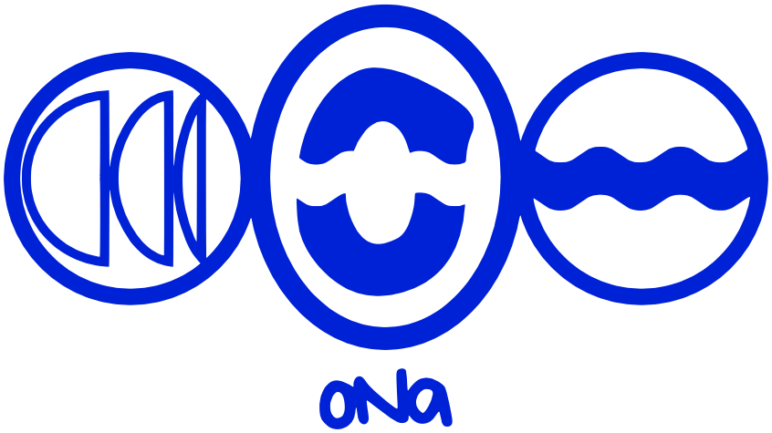
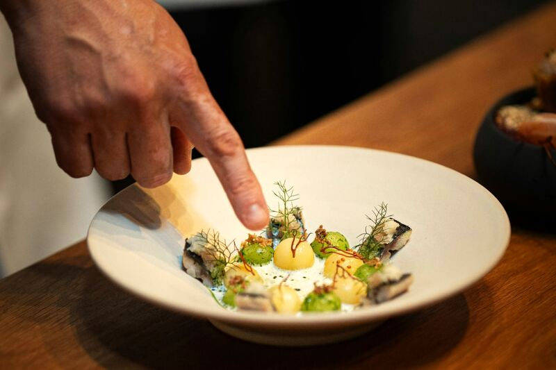
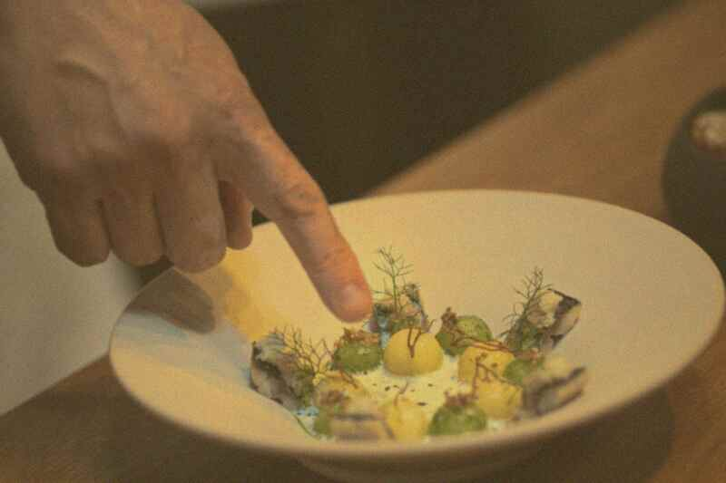

Social Media · Desarrollo web · Content Strategy
Tu marca, lista para ser encontrada.
En ONA Studio hacemos que tu marca se vea, se sienta y se encuentre como merece. Un equipo creativo analiza al detalle lo que necesita cada marca para darle presencia en redes sociales, imagen profesional, identidad propia y la confianza que su público busca.
La brecha
Tu negocio, en tus manos. Tu imagen, en las nuestras.
- Lo que haces es bueno. Lo sabes.
- Mostrarlo igual de bien es otro oficio: luz, ritmo, acabado y constancia.
- No tienes que dominarlo tú. Tu tiempo rinde más en tu negocio.
- De eso nos encargamos nosotros: presencia, imagen, identidad y constancia, en manos profesionales.
Nuestra visión
Las redes no son solo para vender, son la ventana donde tu marca demuestra de qué está hecha.
Entendemos las redes sociales como el espacio ideal para transmitir la personalidad de tu negocio. Más allá de publicar por publicar, buscamos que cada post conecte con las personas correctas.
Con contenido estratégico, fotos estéticas y Reels que atrapen a la primera, logramos que tu comunidad se enamore de lo que haces y quiera quedarse contigo a largo plazo.
¿Hablamos de tu proyecto?De la cámara a tu web
Video, web, estrategia e identidad, en un solo equipo.

Servicios
Todo lo que podemos hacer por tu marca.
De la cámara a tu web, cada pieza con un mismo objetivo: que tu marca esté, se vea y se encuentre.
-
Presencia digital constante
Social Media & Content Strategy
Imagen, estilo y constancia en tus redes: planeamos, producimos y medimos tu contenido, con un cronograma visual de lo que viene.
-
01
Grabación de video
Lo que hace única a tu marca, grabado con luz y encuadre cuidados.
-
02
Edición de video
Ritmo, cortes y acabado profesional en cada pieza.
-
Sitios web y landing pages a tu medida
Desarrollo web
Tu página web y tus landing pages, creadas desde cero y a tu medida, con una estrategia de marketing digital detrás de cada sección para que cada visita te escriba, reserve o compre.
- Sin plantillas
- HTML
- CSS
- JavaScript
- Estrategia digital
Además, para tu negocio- Tarjetas de lealtad
- Menús digitales
- Página de reservas
-
04
Estrategia visual
Qué mostrar y cómo contarlo, pensado de forma integral para redes y web.
-
05
Identidad de marca
Construimos la identidad de tu marca a partir de lo que realmente es.
Qué incluye · Social Media · Desarrollo web · Content Strategy
Todo tu contenido, de la idea a la publicación.
Un solo equipo planea, produce y mide tu contenido para que tu marca se vea constante y profesional en cada publicación.
- Idea
- Planeación
- Producción
- Publicación
- Reels que detienen el scrollVideos cortos para Instagram y TikTok con edición, música o audio en tendencia, subtítulos y el formato óptimo.
- Un feed que se reconocePublicaciones, carruseles y diseños alineados a tu identidad visual.
- Tu negocio, bien retratadoSesiones de fotos y video agendadas con anticipación y editadas a nivel profesional.
- Todo planeado con tiempoEstrategia, calendario y planeación con tu información y tus promociones clave.
- Palabras que conectanCopywriting: textos, captions y llamados a la acción que invitan a escribirte.
- Ideas que te distinguenConceptos creativos diferenciadores, nunca de plantilla.
- Claridad sobre lo que funcionaReporte de métricas y desempeño para decidir con datos.
- Una web a la alturaTu sitio y landing pages, programados desde cero y a tu medida (nunca de plantilla), para que quien te descubre en redes tenga a dónde llegar y cómo contactarte. Además: menús digitales, reservas en línea y tarjetas de lealtad.
Cómo trabajamos
Un solo equipo. Todas las pistas.
Identidad, estrategia, grabación, edición y web corren en la misma línea de tiempo: la de tu marca.
- Identidad
- Estrategia
- Grabación
- Edición
- Web
- Presencia
El después
Mismo lugar. Otra mirada.
En redes, la gente decide en un instante si se detiene en tu publicación. La misma toma, con buena luz y edición profesional, transmite calidad, antojo y confianza. Elige un ejemplo y mueve la línea, o toca cada etiqueta, para comparar.


- Luz amarilla
- Fuera de foco
- Encuadre chueco
- Luz cuidada
- Nitidez
- Color real
- Foto movida
- Muy oscura
- Luz amarilla
- Luz cuidada
- Nitidez
- Color real
- Muy oscuro
- Luz verdosa
- Ruido y horizonte torcido
- Luz cuidada
- Nitidez
- Color real
- Cámara movida
- Color sucio
- Entrecortado
- Estable
- Color cuidado
- Fluido
Por qué Ona
Estilo propio. Nunca una plantilla.
Elegirnos es trabajar con un solo equipo creativo para todo lo que se ve de tu marca: video, web, estrategia e identidad hablan el mismo idioma. Estudiamos a detalle lo que necesita tu marca, nada sale de una plantilla y todo apunta a lo mismo: que se vea profesional, sea reconocible y genere confianza.
-
01 / 06
Tu estilo, no una plantilla
Partimos de la esencia de tu marca. Lo que se ve es tuyo, no genérico.
-
02 / 06
Calidad profesional
Imagen profesional: bien grabado, bien editado, con acabado cuidado.
-
03 / 06
Contenido que de verdad engancha
Creamos piezas que transmiten valor, solucionan dudas y conectan genuinamente con las personas.
-
04 / 06
Constancia sin agotarte
Tu presencia deja de depender de que te sobre tiempo o energía.
-
05 / 06
Tranquilidad
Un equipo creativo se encarga. Tú sigues con lo tuyo.
-
06 / 06
Medimos lo que importa
Que tu marca se vea bien, se reconozca y transmita su esencia. Así cada publicación trabaja para lo que de verdad buscas: tus metas.
Ambientes
Todo lugar tiene su mejor luz.
Hecho en Ona.
Lo que dicen
Preguntas frecuentes
Lo que nos preguntan.
¡Hola! Pregúntame lo que quieras sobre tu marca o toca una de las preguntas rápidas.
- ¡Sí! Producimos videos cortos para Instagram y TikTok con edición, música o audio en tendencia, subtítulos y el formato ideal para que detengan el scroll.
- Claro. Agendamos sesiones de foto y video con anticipación y las editamos a nivel profesional, para que tu negocio se vea tan bien como realmente es.
- Sí, y ninguna sale de una plantilla. Diseñamos y programamos tu sitio desde cero, en HTML, CSS y JavaScript, a la medida de tu negocio: único, impecable en el celular y pensado para que cada visita te escriba, reserve o compre. Tus redes y tu web, hablando el mismo idioma. Y si tu negocio lo necesita, también creamos tu menú digital, tu página de reservas y tu tarjeta de lealtad.
- ¡Claro! Revisamos tu sitio actual: cómo se ve, cómo se lee en el celular y si lleva a la gente a contactarte. Con eso te proponemos lo que más le conviene a tu marca, renovarlo o rehacerlo desde cero y a tu medida, para que tu web esté a la altura de lo que haces y convierta visitas en clientes.
- Para eso estamos. Creamos tu estrategia: qué mostrar, cómo contarlo y cuándo publicarlo. Tú nos cuentas tu negocio y nosotros lo convertimos en contenido que conecta.
- Nunca. Partimos de la esencia de tu marca y nada sale de una plantilla: lo que publiquemos será inconfundiblemente tuyo.
- ¡El mejor! Construimos tu identidad desde el inicio para que tu marca nazca con una imagen clara, profesional y fácil de recordar.
- Sí. Una imagen profesional no depende del tamaño de tu negocio, sino de cómo se cuenta. Te ayudamos a que lo bueno que ya haces se note.
- Sí. Damos seguimiento a las métricas de tus redes, como seguidores y alcance, para saber qué funciona y ajustar sobre la marcha. Siempre sabrás qué está pasando con tu marca.
- Escríbenos por WhatsApp o con el formulario, cuéntanos de tu marca y te decimos por dónde conviene empezar. ¡Tu marca está lista para ser encontrada!
¿Qué hace ONA Studio por mi marca?
Nos encargamos de todo lo que se ve de tu marca: planeamos y producimos tu contenido para redes, grabamos y editamos video, desarrollamos tu web, creamos tu estrategia visual y construimos tu identidad. Un solo equipo creativo, para que en redes y en web tu marca se vea profesional, sea reconocible y genere confianza.
¿Graban y editan video para creadores de contenido e influencers?
Sí, grabamos y editamos video y fotografía para creadores de contenido e influencers. Somos un servicio, no un programa de edición: nuestro equipo graba y edita por ti, con ritmo, cortes y acabado profesional, para que cada pieza se vea como tu marca.
¿Hacen diseño web, páginas web y landing pages?
Sí, diseñamos y programamos tu página web o tu landing page desde cero y a tu medida, nunca de plantilla, con una estrategia de marketing digital detrás de cada sección. Además podemos sumar menús digitales, reservas en línea y tarjetas de lealtad.
¿Trabajan con negocios de comida y vida nocturna?
Sí, hacemos contenido para restaurantes, bares y antros: grabamos y editamos su video y fotografía, y cuidamos su presencia en redes sociales con imagen profesional e identidad propia. Cada marca parte de su esencia, nunca de una plantilla.
Mi producto ya es bueno, ¿por qué cuidar cómo se ve?
Porque antes de probarte, la gente te ve. Tu perfil y tu web suelen ser el primer contacto con tu marca, y ahí se decide si confían en ti o siguen de largo. Una buena imagen no cambia lo que haces: hace que se note.
¿No basta con publicar yo mismo desde el celular?
Puedes, y lo que haces tiene valor. La diferencia está en la estrategia y el acabado: qué mostrar, cómo contarlo y con qué constancia. Cuando eso lo lleva un equipo profesional, tu contenido deja de ser esfuerzo suelto y empieza a construir marca.
¿Por qué importa tanto la constancia?
Porque la confianza se construye con repetición. Una marca que aparece con regularidad y con el mismo estilo se vuelve reconocible y se recuerda; una que aparece a ratos se olvida. Por eso tu presencia es constante, mes a mes, con un cronograma visual de lo que viene.
¿Voy a perder mi estilo?
Al contrario. Antes de crear, estudiamos a detalle tu marca: qué la hace distinta, cómo habla y a quién le habla. Todo parte de su esencia, nunca de una plantilla, para que lo que se vea sea inconfundiblemente tuyo.
¿Tengo que saber qué mostrar?
No. Decidir qué mostrar, cómo contarlo y en qué orden es justo parte de nuestro trabajo: la estrategia visual. Tú nos cuentas tu negocio; nosotros lo convertimos en contenido.
¿Cuánto de mi tiempo va a requerir?
La idea es justo devolvértelo. Del día a día se encarga un equipo creativo, así tu presencia deja de depender de que te sobre tiempo o energía. Tú sigues con lo tuyo y siempre sabes qué viene.
¿Cómo sabemos que está funcionando?
Medimos lo que importa: que tu marca se vea bien, se reconozca y transmita su esencia, porque eso es lo que la acerca a sus metas. Y damos seguimiento a las métricas de tus redes, como seguidores y alcance, para saber qué funciona y ajustar el rumbo.
Ya tengo una página web, ¿pueden actualizarla?
Sí. Primero revisamos tu sitio actual: cómo se ve, qué tan claro se lee en el celular y si guía a tus visitas a escribirte, reservar o comprar. Con eso te decimos qué conviene: renovar lo que ya funciona o rehacerlo desde cero. En ambos casos lo programamos a la medida de tu negocio, en HTML, CSS y JavaScript y sin plantillas, para que tu web se vea actual, transmita confianza y trabaje por tu marca todos los días.
¿Por dónde conviene empezar?
Por entender en qué punto está tu marca, y eso es lo primero que analizamos. Si aún no tiene una identidad clara, conviene empezar por ahí; si ya la tiene, por la estrategia visual y el contenido. Escríbenos y te decimos qué le hace falta a la tuya.
Escríbenos
Cuéntanos tu historia.
Lo bueno ya está. Falta que se vea.